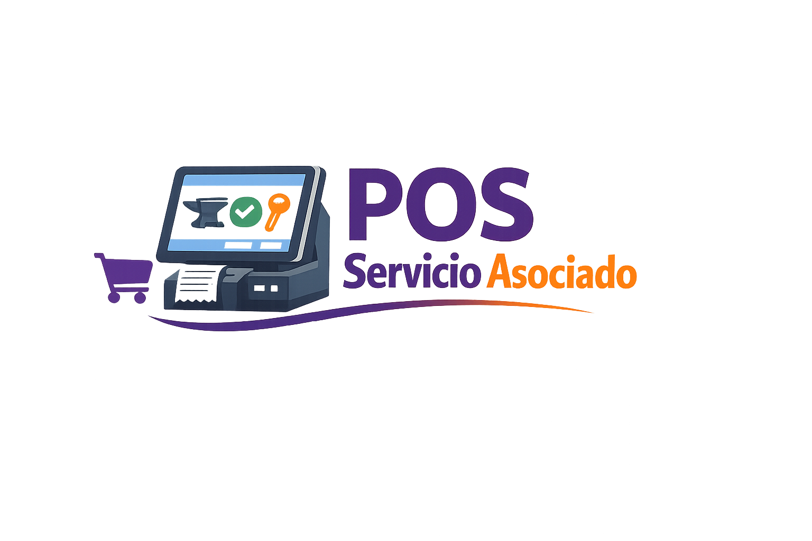
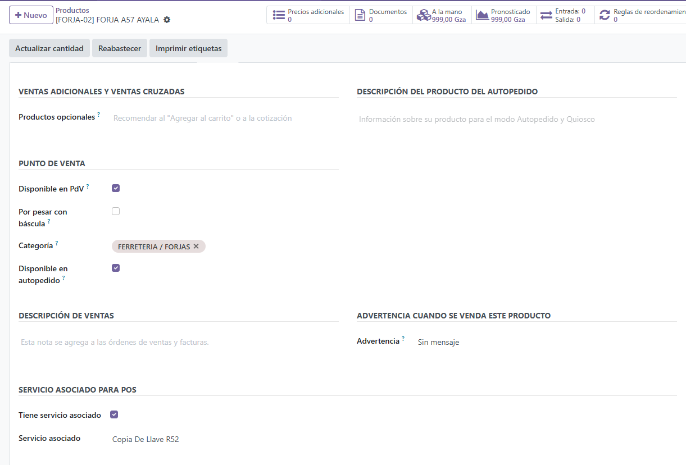
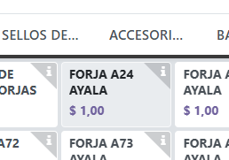
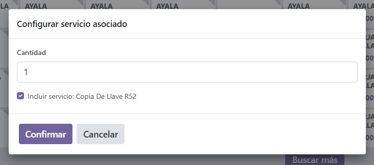
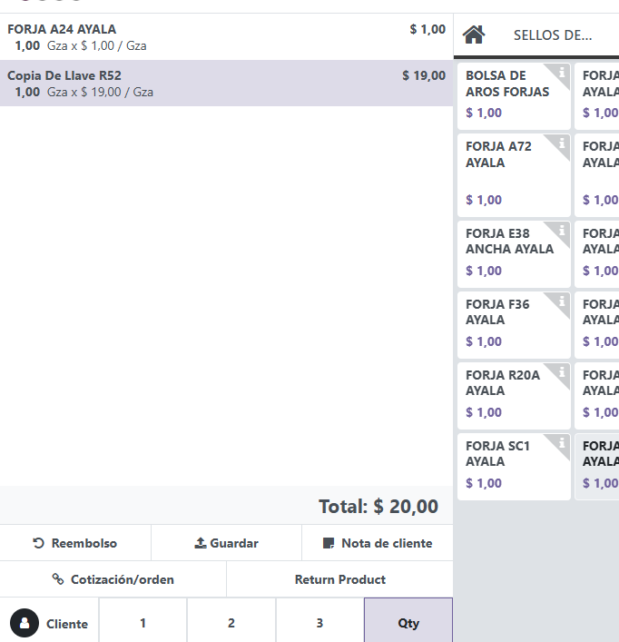
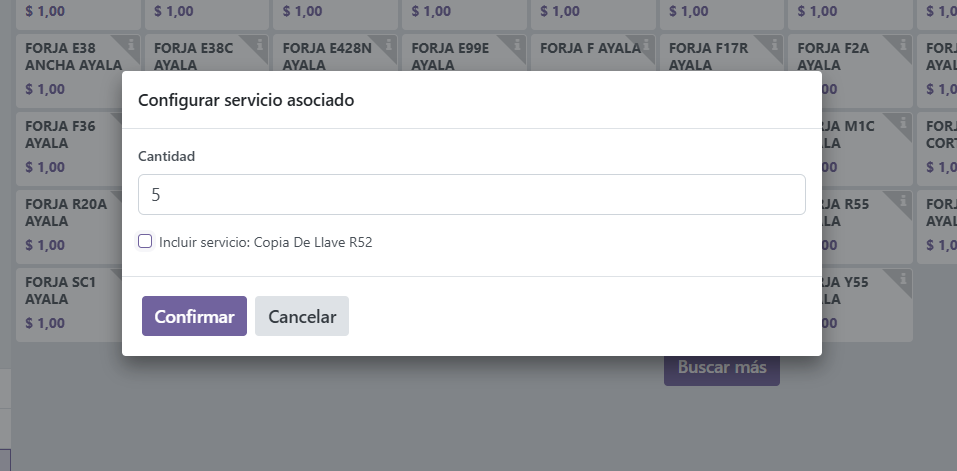
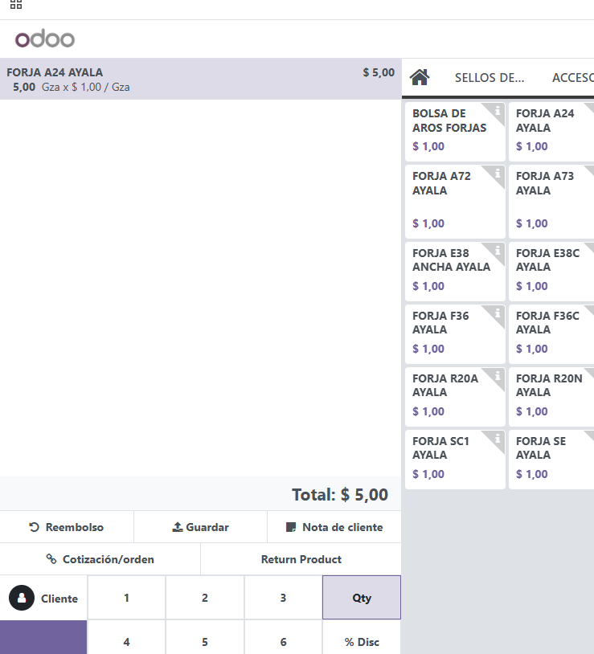

Add an associated-service flow in Odoo POS for products that require optional or mandatory extra services.
product.template: Tiene servicio asociado and Servicio asociado.





Odoo 17.0 - On Premise / Odoo.sh